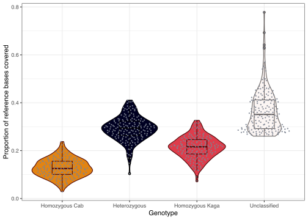
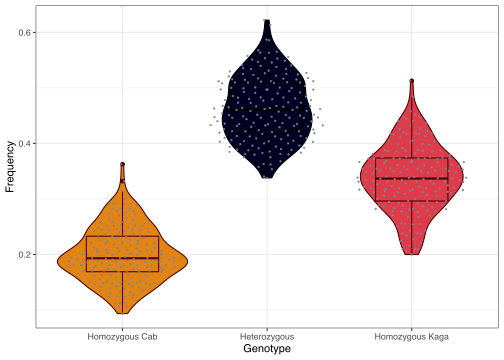

Somite period F2 analysis
Ian Brettell
2021-06-18
1 Plot recombination blocks
library(here)
source(here::here("docs/source.R"))1.1 Read in data
in_file = "~/Desktop/hmm_output_batch_01.txt"
data = readr::read_tsv(in_file,
col_types = "c--i-ii")
# Create column with lane
bin_length = 5000
df = data %>%
dplyr::mutate(LANE = basename(sample) %>%
stringr::str_remove(".txt") %>%
as.numeric(.),
BIN_START = bin * bin_length - bin_length + 1,
BIN_END = bin * bin_length) 1.2 Plot
1.2.1 Proportion of genome covered by each site
1.2.1.1 Read in total medaka genome count
# Get chromosome lengths
med_chr_lens = read.table(here::here("data",
"Oryzias_latipes.ASM223467v1.dna.toplevel.fa_chr_counts.txt"),
col.names = c("chr", "end"))
# Add start
med_chr_lens$start = 1
# Reorder
med_chr_lens = med_chr_lens %>%
dplyr::select(chr, start, end) %>%
# remove MT
dplyr::filter(chr != "MT")
# Total HdrR sequence length
total_hdrr_bases = sum(med_chr_lens$end)1.2.1.2 Get total number of bases covered by each state
# Set states to loop over
states = 0:2
names(states) = states
# Run loop over each LANE
base_cov_df = df %>%
split(., f = .$LANE) %>%
purrr::map(., function(LANE){
# convert to ranges object
lane_ranges = GenomicRanges::makeGRangesFromDataFrame(LANE,
keep.extra.columns = T,
ignore.strand = T,
seqnames.field = "chr",
start.field = "BIN_START",
end.field = "BIN_END")
# get total bases covered by each state
purrr::map_dfr(states, function(STATE){
lane_ranges[lane_ranges$state == STATE] %>%
# merge contiguous ranges
GenomicRanges::reduce(.) %>%
# get width of ranges
width(.) %>%
# get total bases covered
sum(.) %>%
# coerce into data frame
data.frame("BASES_COVERED" = .)
}, .id = "STATE") %>%
# add FREQ column
dplyr::mutate(FREQ = BASES_COVERED / total_hdrr_bases) %>%
# add UNCLASSIFIED row
tibble::add_row(STATE = "UNCLASSIFIED",
BASES_COVERED = total_hdrr_bases - sum(.$BASES_COVERED),
FREQ = (total_hdrr_bases - sum(.$BASES_COVERED)) / total_hdrr_bases)
}
) %>%
dplyr::bind_rows(.id = "LANE")Plot
# Plot
base_cov_df %>%
dplyr::mutate(STATE = factor(STATE, levels = c(0,1,2, "UNCLASSIFIED")),
STATE_RECODE = dplyr::recode(STATE,
`0` = "Homozygous Cab",
`1` = "Heterozygous",
`2` = "Homozygous Kaga",
"UNCLASSIFIED" = "Unclassified")) %>%
# plot
ggplot(aes(STATE_RECODE, FREQ, colour = STATE, fill = STATE)) +
geom_violin() +
geom_boxplot(width = .3) +
ggbeeswarm::geom_quasirandom(color="#7D8491", size=0.4, alpha=0.9) +
theme_bw() +
scale_colour_manual(values = karyoploteR::darker(pal_hom_het_2)) +
scale_fill_manual(values = pal_hom_het_2) +
guides(colour = "none", fill = "none") +
xlab("Genotype") +
ylab("Proportion of reference bases covered")
1.2.2 Ratio of called sites
df %>%
# get counts of sites per LANE and state
dplyr::group_by(LANE, state) %>%
dplyr::count() %>%
# spread to one row per LANE
tidyr::pivot_wider(id_cols = LANE, names_from = state, values_from = n) %>%
# calculate frequencies of states per LANE
dplyr::mutate(TOTAL = sum(`0`, `1`, `2`),
FREQ_0 = `0` / TOTAL,
FREQ_1 = `1` / TOTAL,
FREQ_2 = `2` / TOTAL) %>%
# gather
tidyr::pivot_longer(cols = starts_with("FREQ_"),
names_to = "STATE",
names_prefix = "FREQ_",
values_to = "FREQ") %>%
# order STATE and recode with meaning
dplyr::mutate(STATE = factor(STATE, levels = c(0,1,2)),
STATE_RECODE = dplyr::recode(STATE,
`0` = "Homozygous Cab",
`1` = "Heterozygous",
`2` = "Homozygous Kaga")) %>%
# plot
ggplot(aes(STATE_RECODE, FREQ, colour = STATE, fill = STATE)) +
geom_violin() +
geom_boxplot(width = .5) +
ggbeeswarm::geom_quasirandom(color="#7D8491", size=0.4, alpha=0.9) +
theme_bw() +
scale_colour_manual(values = karyoploteR::darker(pal_hom_het_2)) +
scale_fill_manual(values = pal_hom_het_2) +
guides(colour = "none", fill = "none") +
xlab("Genotype") +
ylab("Frequency")

Frequency based on number of sites
1.2.3 Karyoplot
Make custom chromosome scaffold
# Create custom genome
med_genome = regioneR::toGRanges(med_chr_lens)Convert data to list of block boundaries for each LANE
block_bounds_list = df %>%
# loop over LANE
split(., f = .$LANE) %>%
purrr::map(., function(LANE){
# loop over CHR
LANE %>%
split(., f = .$chr) %>%
purrr::map(., function(CHR){
# Get lengths of each contiguous state
cont_len = rle(CHR$state)
# Get cumulative sum of those lengths
cum_blocks = cumsum(cont_len$lengths)
# Get rows that correspond to block changes
block_bounds = CHR[cum_blocks, ] %>%
# Add end of previous black
dplyr::mutate(END_PREV = dplyr::lag(BIN_END)) %>%
# Replace the NA in the first row with `1`
dplyr::mutate(END_PREV = tidyr::replace_na(END_PREV, 1)) %>%
# Add colour
dplyr::mutate(COLOUR = dplyr::recode(state,
!!!pal_hom_het_2[-which(names(pal_hom_het_2) == "UNCLASSIFIED")]))
}) %>%
dplyr::bind_rows()
})Extract y cutoff points for each lane
lane_cutoffs = cut(0:1, breaks = length(block_bounds_list)) %>%
levels(.) %>%
data.frame(lower = as.numeric( sub("\\((.+),.*", "\\1", .) ),
upper = as.numeric( sub("[^,]*,([^]]*)\\]", "\\1", .) )) %>%
dplyr::arrange(dplyr::desc(lower))Plot karyoplot
file_out = here::here("plots/20210618_karyoplot.png")
png(file=file_out,
width=13000,
height=13000,
units = "px",
res = 300)
# Plot ideogram
kp = karyoploteR::plotKaryotype(med_genome, plot.type = 5)
# Add data background
#karyoploteR::kpDataBackground(kp, r0=0, r1 = 1, color = "white")
# Add rectangles in loop
counter = 0
purrr::map(block_bounds_list, function(LANE){
# Add to counter
counter <<- counter + 1
# Add rectangles
karyoploteR::kpRect(kp,
chr = LANE$chr,
x0 = LANE$END_PREV,
x1 = LANE$BIN_END,
y0 = lane_cutoffs[counter, ] %>%
dplyr::pull(lower),
y1 = lane_cutoffs[counter, ] %>%
dplyr::pull(upper),
col = LANE$COLOUR,
border = NA)
# Add axis label
karyoploteR::kpAddLabels(kp, labels = unique(LANE$LANE),
r0 = lane_cutoffs[counter, ] %>%
dplyr::pull(lower),
r1 = lane_cutoffs[counter, ] %>%
dplyr::pull(upper),
cex = 0.5)
})
dev.off()knitr::include_graphics(file_out)